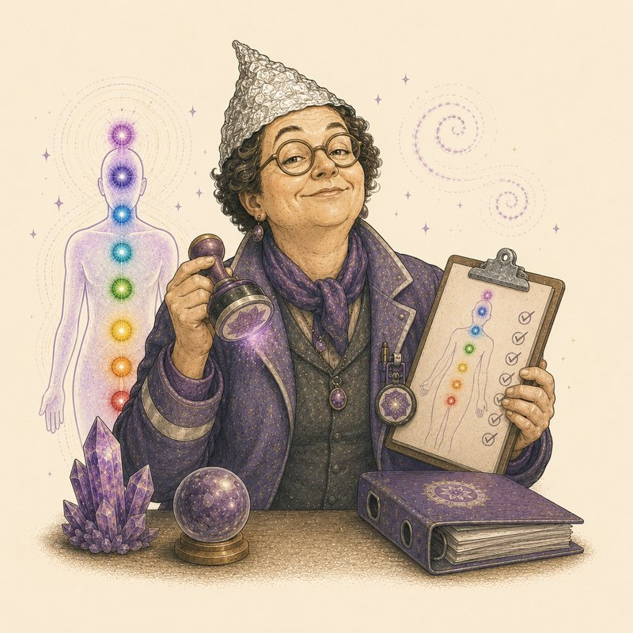

Verdächtige

Zertifiziert nach einer Norm, die 1977 spontan erfunden wurde, aber mit Diplom, Modulplan und Prüfungsgebühr – Hauptsache, das Energiezentrum hat am Ende einen Stempel.
Laut Wikipedia gibt es keinerlei wissenschaftlichen Nachweis für die Existenz von Chakren, und die Edinburgh Skeptics Society stellt fest, dass dafür nie Belege erbracht wurden. Die heute verbreitete westliche Zuordnung von Regenbogenfarben zu den sieben Chakren wurde tatsächlich erst 1977 zusammengestellt, Verbindungen zu Körperdrüsen und Nervengeflechten kamen erst ab den 1920er Jahren hinzu. Trotzdem werden in Deutschland zahlreiche kostenpflichtige Diplomausbildungen und Zertifikate zum 'Chakra-Practitioner' oder zur 'Chakra-Diagnostik' angeboten, obwohl es keine staatlich anerkannte Norm für Chakren gibt.